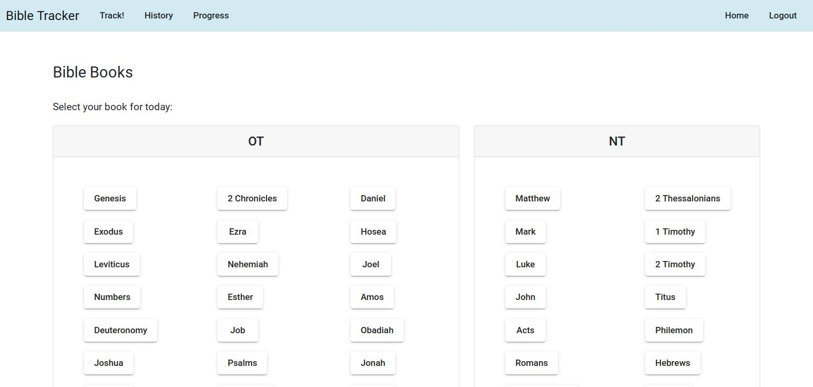
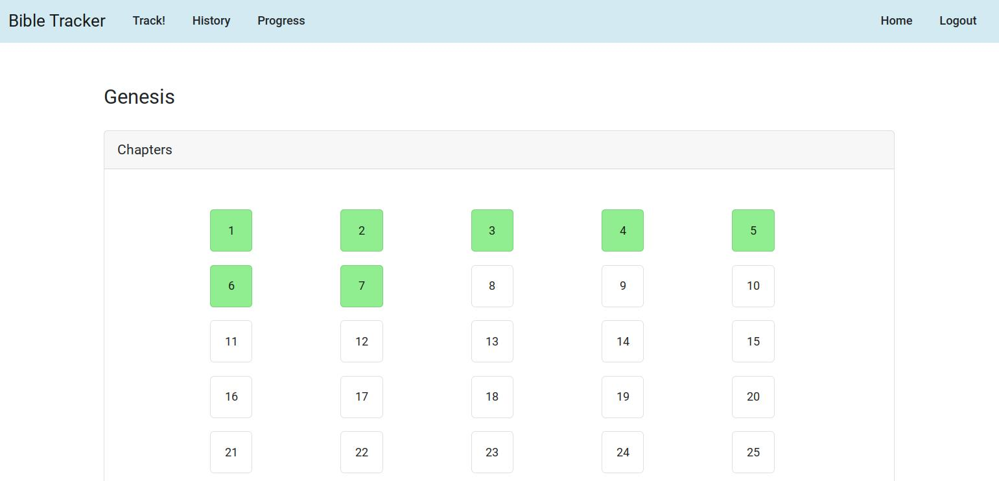
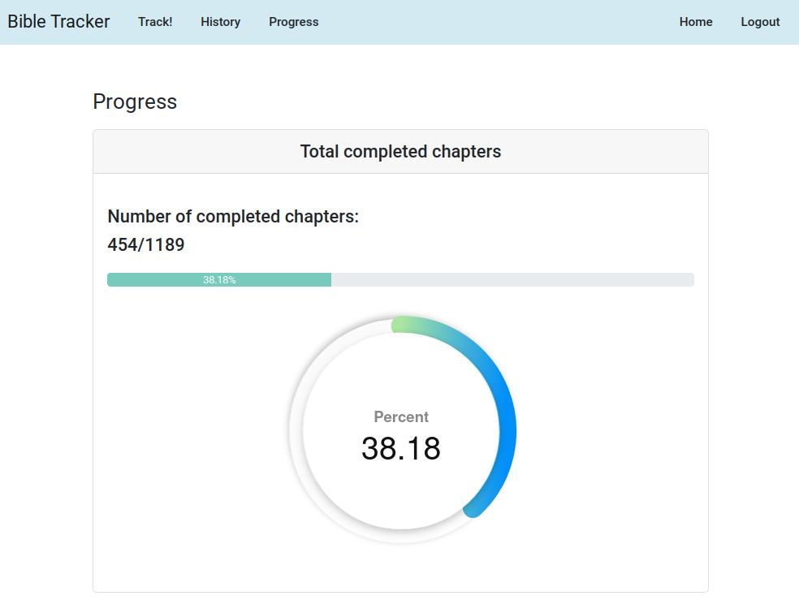
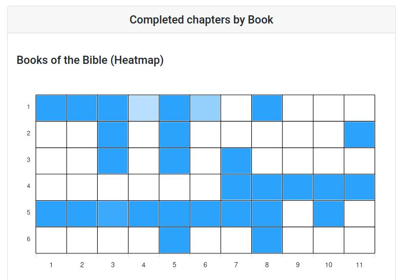
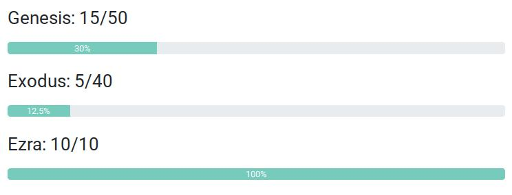

Track!
Last read:
{{ lastReadDate | date: "MMM, d yyyy @ HH:mm:ss" }}
{{ lastReadBook }} {{ lastReadChapter }}
Track your daily reading by clicking on the book and select the chapter you desire to read today. This will add it to your daily reading history.


Click here to start tracking your daily Bible reading!
History
Want to know what you have covered in the past few days or months?

Click here to view your history daily Bible reading!
Progress
See how much of the Bible you have completed
A book based heatmap is generated for visualization
See your reading progress book by book
Click here to view your progress for reading the entire Bible!